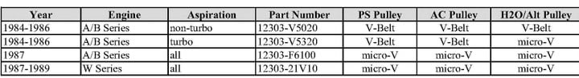

-
Not always true. Quest 3.3 water pumps aren't compatible with any pulley except the Quest 3.3 pulley.Originally posted by BLOZ UP View Post- VG30DET (HE341) 86 300ZX - 1982 280ZX Turbo - Headered NA 1986 300ZX 2+2 - 2000 Xterra - -
This is what I did for pathfinder 3.3, also to note my 3.0 pulley wouldn't fit onto the 3.3 WP I haveOriginally posted by BLOZ UP View Post
I took the Z31 alt bracket, cut and weld one of the back ear to move it in, made a spacer+longer bolt and tossed it on. Also did away with the tensioner bracket as it was causing issues.
-
I tried cutting the alternator bracket but my HF cutoff motor wasn't having it. That would have been the easiest. Now I'm jury rigging one of the spacers for the Frontier idler pulley brackets as a new alternator mount that I'll weld to my engine mount.Originally posted by sprtcrazy17 View PostBLOZ UP.com
It is not recommended to confirm proper installation by driving into walls or other barriers as this could cause personal injury or damage to the vehicle. -
Here's my take on it… taken from 1999 Quest
Closer look
As you can see, Quest water pump and pulley. The alternator with it's wider pulley allowed the belt to line up without the need to modify the mount.Cha iro
enjoy building it yourself.
if it fails, fuck it.
at least you gave it a whirl. -
Please, for the sake of simplicity and to keep misinformation down
RUN MATCHING ACCESSORY SET UPS -
I agree with this statement and this has been a struggling point for me in this conversion. I really don't want to build a mutt that requires you to keep a specific build list whenever you need to replace a part.Originally posted by 88sinZ View Post
My project has been put on hold and I was just jumping back into it after a few years. As I read through this thread, there are a lot of creative people that have done fabrication work arounds. I think there are two issues to keep in mind when dealing with the crank pulley/accessories on the VG33 conversion. 1) what is your skill/fabrication level and 2) What is your current accessory setup. I'm trying to avoid the fabrication route.
As far as a starting point, I was just looking at the Z31 wiki on Harmonic Balancers. The table really breaks us down into 3 configurations that I can distinguish.- 84-86 NA - Running accessories using all V-Belts
- 84-86 Turbo - Running accessories on 2 V-Belts and 1 Micro-V for the Fan/Alternator
- 87-89 NA and Turbo - Running all Micro-V belts
http://z31.com/wiki/doku.php?id=reso…monic_balancer

When I broke it down this way, I found that there are easy solutions for two of the three configurations that are bolt on and don't require a lot of fabrication skills.
For configuration 1, the 84-86 NA - Running accessories using all V-Belts, I found that the Pathfinder guys have figured out a clean fix. I found this build thread which also has some great info:
http://www.nissanpathfinders.net/for…pathy/?hl=vg34
The Harmonic Dampener in the 90-95? Pathfinders uses a bolt on pulley assembly on a hub that bolts onto the crank. I pulled this off of a 90 Pathfinder at Pick-A-Part this weekend.
So I contacted Mr.510 and found that he's produced a crank pulley adapter for the Pathfinder guys that bolts directly onto the VG33 crank snout. This seems to be my best option for a clean and easy bolt on conversion to minimize the "mutt" factor. This combination works for all of us starting with 84-86 NA's which includes anyone that did an 84-86 NA to Turbo conversion. With this adapter hub along with the bolt on pulley I found this weekend, one conversion issue is now gone.
He also sent me a picture of a prototype crank pulley that would take care of guys with configuration 3 - 87-89 NA and Turbo - Running all Micro-V belts. He said this fits the multi-rib belts of the Z31, S12, and Infiniti M30 and that this pulley is currently on his friend's "M33". I was considering going this route since I like this single piece conversion crank pulley. It's a nice piece of work and I believe he has a batch that heâll be fabricating soon.
I was pretty excited after trading a few emails with Dave - Mr.510 and thought I would share what I've learned over the past week. Between these two items that he has available, it removes some of the anxiety figuring out the crank issue on the conversion if you're like me and want to maintain some level of the original car's integrity.1986 NA - Purchased by me in December 1985
Working on VG33 - NA to Turbo
Tokico Illuminas w/ Eibach Springs
88SS Sways -
Well I ordered one of the VG33 adapter hubs from Mr.510. This piece is very well made! I just mounted the stamped pulley to the adapter hub and compared to a stock pulley.
A shot of the back:
Hereâs a shot of this setup next to a A/B Turbo pulley:
Note that the pulley diameters are the same so no worries about under/over driving the accessories.
Also, thereâs a significant weight difference between the two:
- Stock Crank Pulley = 7.1lbs
- Adapter Hub with Stamped Pulley - 3.3lbs
A 3.8lbs reduction = 53.5%1986 NA - Purchased by me in December 1985
Working on VG33 - NA to Turbo
Tokico Illuminas w/ Eibach Springs
88SS Sways -
that's pretty dope -
So I thought I would share my pulley/belt configuration on my VG33. My VG33 is from a Frontier. I stuck with the VG33 crank and crank pulley. I also used the VG33 water pump and pulley. When I bolted up the power steering pump I found if I put on the Frontier power steering pulley on the Z31 pump it lined up perfectly with the water pump and middle crank pulley. So that left me with the alternator. I pulled one of the tensioners from the Frontier, honestly I'm not completely sure which it is since they were removed months ago. However with a little grinding and bending I was able to get it to mount up to the block and 350Z alternator perfectly. The 350Z alternator pulley lined up perfectly with the rear pulley on crank.
Now the fun part was finding belts. The power steering/water pump belt was pretty easy. I used a 460K5. It is a bit tight to get onto the pulleys but works great. The alternator belt was a bastard. Took 4 trips to various part stores to get one that worked. Honestly I would like it to be about 1/4" shorter but it does work and tensions nice and tight, it is 335k5.
I've heard that you can't use VG30 accessories with the VG33 crank. Seemed to work A-ok for me.
-
Excellently done!! lots of great info!Damn dirty angels....these cars!
Current Daily Driver - 86 Turbo.
Under the cover - THE BANANA… that needs to be re-energized.
sigpic -
So just a quick question, started to get flustered while I was searching through multiple threads on what to order. Using a 96-2000 Pathy VG33, would I use the Engine Coolant Temp sensor for the VG30 with the single tab that comes off the top of the sensor or would I use the VG33 temp sensor?Build Log Link: http://z31performance.com/showthread…-VG33-HX35-WIP
-
Use any and all sensors that come with the vg30/z31. -
Alright, thanks Alex. My shopping cart is correct then =pBuild Log Link: http://z31performance.com/showthread…-VG33-HX35-WIP
-
Just wanted to update that I have a little over 150 miles on my pulley and belt setup and no issues have arisen at all. -
Heh. Matching accessories.
Frontier VG33
Z32 hitty eBay crank pulley, with custom made 11mm crank spacer.
VG33 Water Pump
Z31 Alternator with fabricated tensioner and mount.
Brought out the belt so it's not hitting my shitty water inlet pipe anymore. Which means I can replace that stupid thing at some point.
BLOZ UP.com
It is not recommended to confirm proper installation by driving into walls or other barriers as this could cause personal injury or damage to the vehicle.

Copyright © 2006–. All rights reserved. Privacy Policy